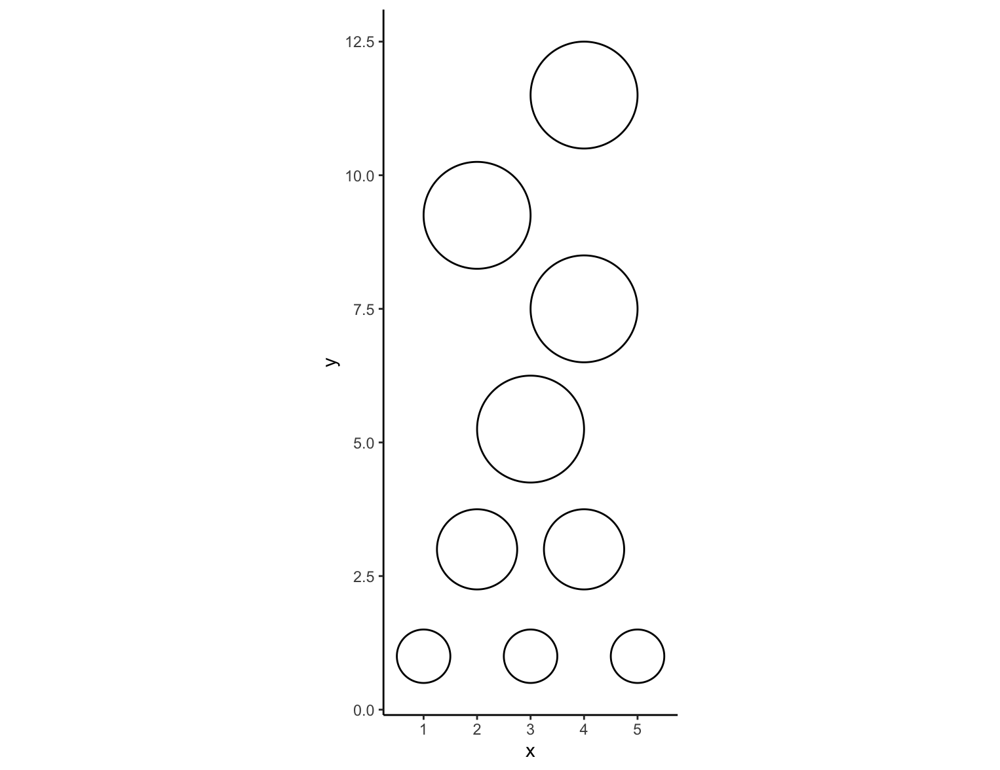
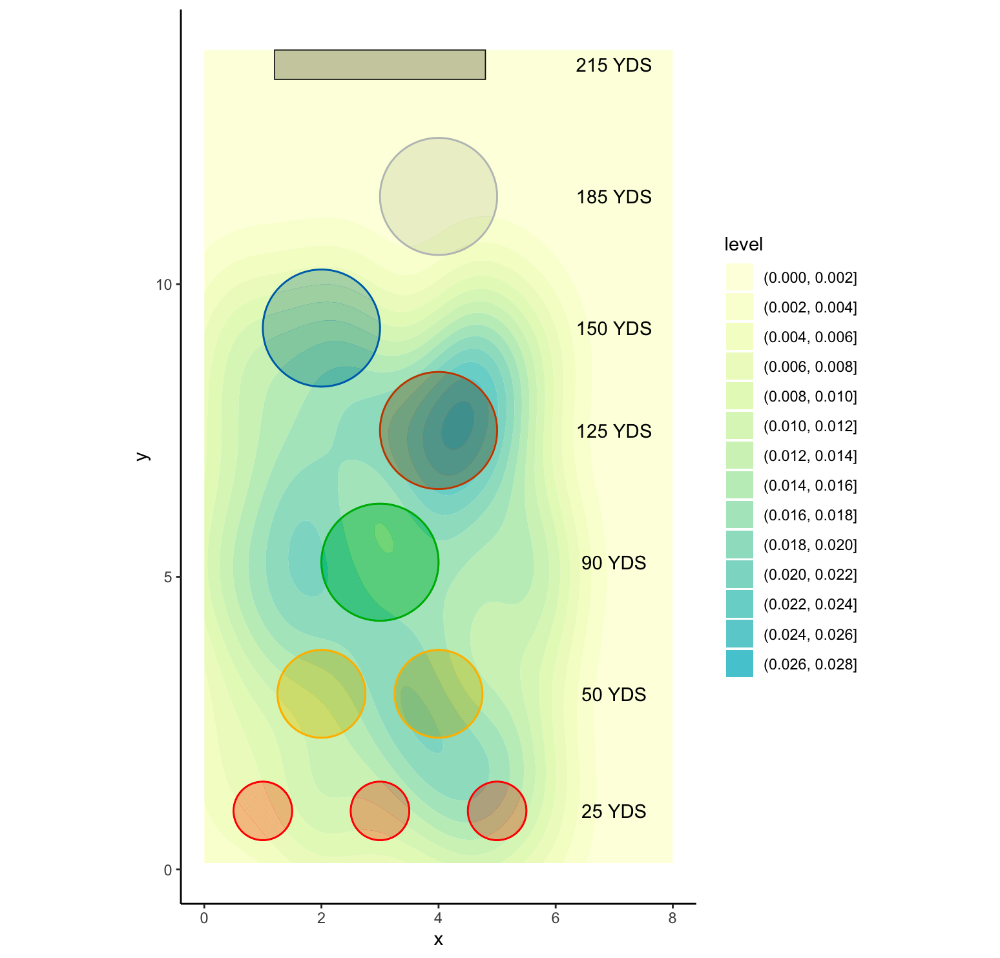

Simulating Topgolf with R
Inspiration
It all started with wanting to do a Topgolf related project… I created the field and targets by drawing shapes with colors in R. My next step was to plot golf balls where they landed. I was met with the tough realization and conclusion that without very tedious and manual data collection, this would not be possible. I was motivated to collect my own data, however over time I would be burnt out and this fun project would become more like a chore. This is when I thought about simulating synthetic data.
Synthetic Data
Synthetic data may sound weird, but it is actually something that is very useful. In cases where there are privacy concerns (credit cards, customer data, etc…), testing models, and even my case (avoiding tedious work that would be neat but also could burn me out). There are some Python libraries such as Faker that has functions to produce data sets with names, credit card numbers, orders and anything, but it is all synthetic data. This synthetic data can be “tuned” to your needs, so you can sample names from a particular geographic area. Allowing you to create customized and realistic distributions of fake data.
Simulating a Game of Topgolf
Topgolf has many different game modes that one can play, and I chose to simulate the classic “Topgolf” game mode. In this mode you get 20 golf balls, and aim for any of the targets. When a ball goes into a target then you score points, and the further targets are worth more points, however you get the most points by hitting into the most center areas of the target. Of course to simulate the game you must first have the field and targets.
Creating the field
As previously mentioned I created the field by first drawing out circles to represent the targets. I did this with ggplot and here is what I started with:

Next I created the back trench target which was a simple rectangle. Once I got all of the targets in place I gave them their respective colors and started looking to methods for creating random data.
Creating the data
I ended up going with the runif() function in R to create my simulated data. I picked this function as I could specify the number of values I wanted to output, the minimum value and the maximum value. From there it would generate a random vector of numbers within my set min and max values. I had two runif() functions, one for the x coordinates of the simulated golf balls and one for the y coordinates.
For the first visual I made, I simulated balls randomly within the bounds of the field and then created this heatmap:

After playing around with the visual aesthetics and adjusting the values for creating the sythetic data I was left with this final version:

Automation and “bots”
However, this is only the final version of the visual… Currently I’m using R and GitHub Actions to create a bot that will play games of Topgolf at set schedules and report the game’s results. As of the writing of this blog post, the bot is working and plays a new game every day. Right now it plays the default Topgolf game mode, which gives 20 balls to hit into any of the targets.
In addition to playing a game each day, the bot makes a random decision on what club it will use for the 20 balls it hits. Currently the club choice will determine the distance of where the balls can be hit. So a driver will allow for the bot to hit the back targets, and a pitching wedge will only hit out to the green targets.
There is not a scoring system implemented yet, but I have already created the code and confirmed that I can detect if a ball scores in a target, and which target it scores in. My next step is to implement the scoring system with this and create a virtual scorecard that will update with each game.
Click here to check out my bot’s most recent game, and I will be updating this blog post as I implement more features!